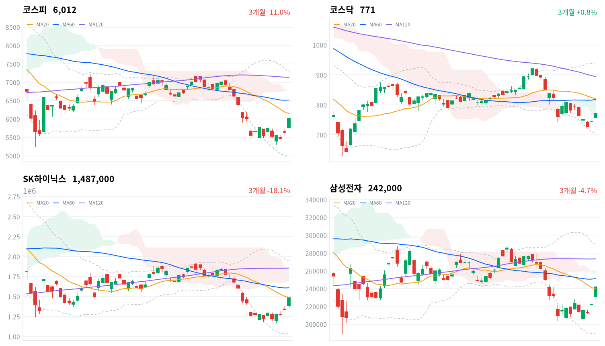

SK하이닉스가 3분기 실적과 올해 약 100조원 규모의 주주환원을 내놓자 반도체 업종이 급등해 코스피를 10거래일 만에 6,000선 위로 끌어올렸다. 외국인과 기관이 함께 샀고 개인은 1조7,662억원을 팔았다(당일 잠정).
같은 AI 재료에 대만가권은 2.04% 오르는 데 그쳐, 코스피의 초과 상승은 국내 종목 재료의 몫이 크다고 판단한다. 외국인 매수가 이어지는지는 한국 시간 10월 29일 새벽 FOMC와 그날 삼성전자 확정 실적 뒤의 수급으로 확인한다.
SK하이닉스는 10월 28일 3분기 영업이익 약 83조원과 2026년 주주환원 약 100조원(8월에 결의한 자사주 40조원 포함) 계획을 발표했다. 반도체와반도체장비 업종이 10.19% 올랐고, 외국인은 코스피에서 7,893억원을 순매수해(당일 잠정) 2거래일째 샀다. 주가가 급등한 날에도 원화는 약했고 국고채 금리는 올랐다.
장 마감 뒤 보도는 외국인 귀환과 자사주 매입 재개를 들어 코스피 바닥론이 힘을 받는다고 설명했고, 후속 실적과 외국인 매수의 지속성을 먼저 확인해야 한다는 신중론도 함께 전했다. 실적과 환원이 반도체 투자심리를 바꿨다는 데는 동의한다. 다만 앤트로픽 실적과 브로드컴·앤트로픽 AI 반도체 계약이라는 아시아 공통 재료에 대만가권은 2.04% 올랐을 뿐이다. 코스피가 대만보다 4.59%포인트 더 오른 초과분은 SK하이닉스 실적·환원이라는 국내 종목 재료의 몫이 크다고 본다.
삼성전자(+9.01%)와 삼성전자우(+11.10%)까지 크게 오른 것은 SK하이닉스 발표가 업종 전체의 환원 기대를 끌어올린 동조 매수로 판단한다. 우선주가 보통주보다 2.09%포인트 더 오른 것이 배당·환원 기대를 함께 샀다는 근거다. AI 투자 수익성 우려가 실제로 걷혀 외국인이 한국 반도체 비중을 다시 늘리기 시작했을 수도 있으나, 같은 재료에 대만이 훨씬 덜 오른 날이라 국내 종목 재료를 우선 설명으로 본다. 업종별 외국인 순매매 자료가 없어, 외국인 순매수와 반도체 급등이 같은 날 나왔다는 사실까지가 근거다. 두 설명은 10월 29일과 30일 두 세션의 외국인 코스피 순매수 합계(당일 잠정)와, 10월 28일 KRX 종가 대비 10월 30일 KRX 종가 기준 삼성전자와 코스피의 수익률 차이로 확인한다.
하루 급등만으로 외국인의 방향이 바뀌었다고 보기는 이르고, 새로 제안할 상품은 없다. 외국인 매수가 이벤트 전의 일시 매수인지 비중 회복의 시작인지는 미국 금리와 달러가 움직인 뒤의 수급에서 드러난다. 가장 가까운 결정적 일정은 한국 시간 10월 29일 새벽 3시 FOMC 결정이다.
코스피가 10월 28일 기준 20일 이동평균 6,148 위에서 마감하면, 오늘 급등이 국내 종목 재료에 기댄 반등이고 외국인의 한국 반도체 비중 축소가 끝나지 않았다는 판단을 철회한다. 이 선은 오늘 종가보다 약 2% 위에 있어 FOMC와 삼성전자 실적 하루 만에 넘을 수 있는 거리다. 아래로는 10월 28일 기준 일목 전환선 5,669가 가장 가까운 지지다.
출처: 서울경제, 머니투데이
직전 10월 27일 미국 세션은 나스닥이 1.18%, S&P500이 0.60% 올랐고 다우는 0.03%로 보합이었다. 오늘 아시아 네 지수도 모두 올랐다. 대만가권(+2.04%)이 가장 강했고 닛케이(+1.08%)·상해종합(+0.91%)·항셍(+0.23%)이 뒤를 이었다. 코스피는 네 지수 평균(+1.06%)보다 5.56%포인트 강했다.
코스피는 전일 종가(5,638)보다 2.23% 높은 5,764에서 출발했다. 한국 정규장 동안 나스닥 선물은 0.46% 올랐고 S&P 선물은 0.04%로 거의 움직이지 않아, 한국 장의 급등을 미국 선물이 따라가지 않았다.
코스피는 장 초반 저점 5,746에서 오전 내내 올라 점심 무렵 6,000선을 넘었고, 오후 한때 그 아래로 밀렸다가 고점 6,032 바로 아래에서 마감했다. 하루 범위의 위쪽 끝이다. 코스닥도 시가 근처 저점에서 올라 고점 부근인 771로 끝났다. 원/달러는 오후 고점까지 오른 뒤 마감 전 일부 되돌렸다.
외국인과 기관이 사고 개인이 판 날이다. 반도체와 전자장비가 지수를 끌었고 조선만 약했다. SK하이닉스 실적·환원에 앤트로픽 실적과 브로드컴·앤트로픽 AI 반도체 계약 소식이 겹쳐 반도체 투자심리가 살아났다는 보도가 나왔고, 2거래일 연속 매수 사이드카가 발동됐다. 시간외 거래 자료는 없어 장 마감 뒤 흐름은 확인하지 못했다.
출처: 머니투데이, 서울경제
코스피는 6.63% 오른 6,012로 10거래일 만에 6,000선을 되찾았고, 코스닥은 3.69% 오른 771로 마감했다. 코스닥 상승폭이 코스피의 절반을 조금 넘어, 대형 반도체가 지수를 끈 날이다.
| 지수 | 종가 | 등락률 | 시가 | 고가 | 저가 | 전일 종가 |
|---|---|---|---|---|---|---|
| 코스피 | 6,012.44 | +6.63% | 5,763.85 | 6,032.28 | 5,745.51 | 5,638.34 |
| 코스닥 | 771.28 | +3.69% | 756.90 | 773.28 | 756.57 | 743.83 |
전날과 달리 상승의 3분의 2가량은 장중에 더해졌다. 10월 27일에는 개장 갭이 상승을 거의 다 만들고 종가가 시가보다 낮았지만, 오늘은 시가 위에서 매수가 마감까지 이어졌다. 갭만 남기고 밀린 어제의 반등과 달리, 오늘은 장중 매수가 계속 붙은 상승으로 판단한다.
| 주체 | 순매수(억원) |
|---|---|
| 개인 | -17,662 |
| 외국인 | +7,893 |
| 기관 | +9,549 |
| 주체 | 순매수(억원) |
|---|---|
| 개인 | -306 |
| 외국인 | -1,872 |
| 기관 | +2,260 |
코스피 매수는 외국인보다 기관이 더 많이 냈다. 기관은 9,549억원을 순매수했고(전일 2,824억원 순매수, 당일 잠정), 외국인은 7,893억원을 순매수했다(전일 5,826억원 순매수). 개인은 1조7,662억원을 순매도해(전일 9,407억원 순매도) 2거래일째 반등을 팔았다. 전일 값은 오늘 다시 받은 잠정치라 어제 글의 외국인 5,953억원 순매수와 조금 다르다.
외국인은 2거래일 동안 1조3,719억원을 순매수해, 10월 23·26일 2거래일 순매도 1조6,638억원의 대부분을 되돌렸다. 장 마감 뒤 보도에 나온 외국인 순매수는 8,228억~8,229억원, 기관은 9,608억~9,609억원으로 잠정치보다 커 확정치가 나오면 달라질 수 있다.
코스닥에서는 외국인이 반대로 움직였다. 외국인이 1,872억원을 순매도했고(전일 257억원 순매수), 기관이 2,260억원을 순매수했다. 외국인 매수가 코스피 대형주에 몰렸다는 해석과 부합하는 조합이다.
장중 누적 수급과 프로그램 매매는 받을 수 있는 자료가 없어 싣지 않는다.
출처: 서울경제, 머니투데이
| 순위 | 종목/ETF | 구분 | 거래대금 | 비고 |
|---|---|---|---|---|
| 1 | SK하이닉스 | 개별주 | 5.72조원 | - |
| 2 | 삼성전자 | 개별주 | 4.11조원 | - |
| 3 | 반도체 테마 ETF | 테마·롱 | 1.95조원 | 29종 합산 |
| 4 | 삼성전기 | 개별주 | 1.18조원 | - |
| 5 | SK스퀘어 | 개별주 | 0.90조원 | - |
| 6 | 삼성전자우 | 개별주 | 0.86조원 | - |
| 7 | KODEX CD금리액티브(합성) | 단기금리·현금성 | 0.66조원 | - |
| 8 | TIGER CD1년금리액티브(합성) | 단기금리·현금성 | 0.33조원 | - |
| 9 | SK하이닉스 레버리지 | 레버리지·롱 | 0.30조원 | 5종 합산 |
| 10 | 삼성E&A | 개별주 | 0.26조원 | - |
단위 백만원 원본을 조 단위로 환산했다. 같은 기초자산 ETF는 방향별로, 같은 테마 섹터 ETF는 테마별로 묶고 지수·해외 ETF는 제외했다.
거래는 반도체로 더 쏠렸다. SK하이닉스(5.72조원)와 삼성전자(4.11조원)가 1·2위였고, 반도체 테마 ETF 29종 합산(1.95조원)이 3위였다. 거래대금이 몰린 두 대형주의 주가는 지수보다 더 올랐다. 실적을 낸 삼성전기가 4위, SK하이닉스 최대주주인 SK스퀘어가 5위였고, SK하이닉스 단일종목 레버리지 ETF 5종 합산(0.30조원)도 9위에 들어 SK하이닉스 상승에 거는 레버리지(롱) 상품 거래가 활발했다.
현금성 상품도 상위에 남았다. KODEX CD금리액티브(합성)가 7위, TIGER CD1년금리액티브(합성)가 8위였다. 거래대금만으로는 이 상품들에 돈이 들어왔는지 빠졌는지 알 수 없다.
상승은 반도체 대형주에 그치지 않고 업종 안으로 넓게 퍼졌다. 반도체와반도체장비 업종은 10.19% 올라 173종목 가운데 157종목이 함께 올랐고, 전자장비와기기(+7.44%)도 105종목 가운데 77종목이 올랐다. 대표 ETF 기준 12개 섹터 가운데 11개가 올랐고 조선(-0.55%)만 내렸다.
소프트웨어 업종은 7.65% 올랐지만 74종목 가운데 3분의 2가량만 올라, 일부 종목에 기댄 상승이다. 증권 업종(+4.19%)은 39종목 가운데 37종목이 올랐다. 기간을 넓히면 반도체 섹터는 1개월 기준 아직 16.66% 낮아, 오늘 급등도 한 달 낙폭을 다 되돌리지는 못했다.
반도체 대형주와 장비·부품주가 함께 급등했다(SK하이닉스 +10.89%, 삼성전자 +9.01%, SK스퀘어 +11.23%, 디아이 +14.55%). SK하이닉스는 3분기 매출 약 104조6천억원, 영업이익 약 83조3천억원을 냈고 영업이익률은 약 80%였다. HBM4를 3분기부터 본격 양산했고, 2029년까지 물량이 완판됐다는 설명과 장기공급계약 비중이 신뢰를 되살렸다는 보도가 나왔다. 한미반도체(+6.32%)·이수페타시스(+8.76%)는 확인된 개별 재료 없이 업종과 함께 올랐다.
조선주는 오른 장에서 내렸다(HD현대중공업 -2.06%, HD한국조선해양 -2.03%). 확인된 재료 없음.
기판·부품주가 크게 올랐다(삼성전기 +8.74%, 대덕전자 +8.07%, 코리아써키트 +6.64%). 삼성전기는 3분기 매출 3조7,633억원, 영업이익 6,910억원으로 역대 최대 분기 실적을 냈고, AI 서버용 MLCC 수급이 당분간 빠듯하다며 여러 고객사와 장기공급계약을 맺었거나 협의 중이라고 밝혔다. 대덕전자·코리아써키트는 확인된 재료 없이 기판 업종과 함께 올랐다.
복합기업이 올랐다(삼성물산 +7.81%, 두산 +6.41%). 삼성물산은 3분기 영업이익이 1조1,428억원으로 15.2% 늘었고, 반도체 생산시설 같은 하이테크 공사로 건설부문 이익이 149.5% 늘었다고 밝혔다. 두산은 확인된 재료 없음.
삼성SDI가 크게 올랐다(삼성SDI +5.12%). 확인된 재료 없음.
실적이 기대에 못 미친 종목은 엇갈렸다. HD현대일렉트릭(+2.78%)은 영업이익 2,845억원이 시장 기대를 7% 밑돌았다는 증권사 분석에도 올랐고, LG이노텍(-1.74%)은 영업이익 948억원이 시장 눈높이 3,000억원을 크게 밑돌았다는 분석이 나온 날 내렸다. 두 분석 모두 원화 강세를 이익이 줄어든 원인의 하나로 꼽았다.
출처: 서울경제, 매일경제, 파이낸셜뉴스
주식이 급등한 날 국고채 금리는 올랐다. 3년물은 4.1bp 오른 3.799%, 10년물은 7.6bp 오른 4.108%였고, 회사채 AA- 3년물은 3.4bp 오른 4.481%였다.
| 지표 | 금리 | 전일比(bp) | 기준일 |
|---|---|---|---|
| 국고채 3년 | 3.799% | +4.1 | 2026-10-28 |
| 국고채 10년 | 4.108% | +7.6 | 2026-10-28 |
| 회사채 AA- 3년 | 4.481% | +3.4 | 2026-10-28 |
| 한국은행 기준금리 | 3.000% | 0.0 | 2026-09 |
한국은행 경제통계시스템(ECOS) 기준. CD 91일물은 오늘 값을 받지 못해 뺐고, 기준금리는 2026년 9월 기준 값이다.
장기물이 더 오른 베어 스티프닝이다. 10년물과 3년물의 차이는 30.9bp로 3.5bp 벌어졌고, 최근 2년(533거래일)의 한가운데쯤에 있다. 어제까지 이어지던 평탄화가 하루 만에 반대로 움직였고, 누가 국고채를 팔았는지는 이 자료로 알 수 없다.
신용 금리차는 주식 급등에도 거의 줄지 않았다. 회사채 AA- 3년물과 국고채 3년물의 차이는 68.2bp로 0.7bp 좁혀졌지만, 최근 2년(533거래일) 가운데 넓은 쪽 12% 안에 머물렀다. 주식은 반도체 이익을 다시 쳐줬지만, 기업이 돈을 빌리는 비용은 국고채보다 크게 매겨진 자리에 그대로 있다.
원/달러는 서울 외환시장에서 14원 오른 1,338원에 마감했다는 보도가 나왔다. 외국인이 주식을 순매수한 날에도 원화가 약했고, 보도는 환헤지 수요와 쇼트커버가 겹친 것을 원인으로 꼽았다.
출처: 서울경제
| 미국 참조 지수 | 구분 | 관측 | 등락률 | 업종 내 상승 비율 | 기준일 |
|---|---|---|---|---|---|
| 반도체·AI 하드웨어 | 업종 | 반도체와반도체장비 | +10.19% | 91% | 10/28 |
| 반도체·AI 하드웨어 | 종목 | SK하이닉스 | +10.89% | – | 10/28 |
| 반도체·AI 하드웨어 | 종목 | 삼성전자 | +9.01% | – | 10/28 |
| 반도체·AI 하드웨어 | 지수 | 대만가권 | +2.04% | – | 10/28 |
| 전력망 | 업종 | 전기장비 | +4.23% | 86% | 10/28 |
| 전력망 | 업종 | 전기제품 | +0.56% | 75% | 10/28 |
| 전력망 | 종목 | HD현대일렉트릭 | +2.78% | – | 10/28 |
| 전력망 | 종목 | LS ELECTRIC | +4.11% | – | 10/28 |
| 전력망 | 종목 | 효성중공업 | +4.39% | – | 10/28 |
| 방산 | 업종 | 우주항공과국방 | +2.69% | 86% | 10/28 |
| 방산 | 종목 | 한화에어로스페이스 | +2.47% | – | 10/28 |
| 산업재 | 업종 | 기계 | +5.36% | 77% | 10/28 |
| 산업재 | 종목 | HD현대중공업 | -2.06% | – | 10/28 |
| 산업재 | 종목 | 한화오션 | -0.94% | – | 10/28 |
| 산업재 | 종목 | 삼성중공업 | +0.73% | – | 10/28 |
| 금속·광업 | 업종 | 철강 | +1.57% | 64% | 10/28 |
| 금속·광업 | 업종 | 비철금속 | +3.33% | 78% | 10/28 |
| 금융 | 업종 | 은행 | +2.74% | 91% | 10/28 |
| 금융 | 업종 | 증권 | +4.19% | 95% | 10/28 |
| 금융 | 종목 | KB금융 | +4.34% | – | 10/28 |
| 금융 | 종목 | 신한지주 | +2.33% | – | 10/28 |
| 소프트웨어 | 업종 | 소프트웨어 | +7.65% | 68% | 10/28 |
| 소프트웨어 | 업종 | IT서비스 | +4.72% | 79% | 10/28 |
| 소프트웨어 | 종목 | NAVER | +2.12% | – | 10/28 |
| 소프트웨어 | 종목 | 카카오 | +1.02% | – | 10/28 |
| 에너지 | 업종 | 석유와가스 | +4.06% | 63% | 10/28 |
| 에너지 | 종목 | S-Oil | -0.63% | – | 10/28 |
| 에너지 | 종목 | SK이노베이션 | +0.87% | – | 10/28 |
| 일본 | 지수 | 닛케이 | +1.08% | – | 10/28 |
| 중국 | 지수 | 항셍 | +0.23% | – | 10/28 |
| 중국 | 지수 | 상해종합 | +0.91% | – | 10/28 |
원/달러는 한국장 시간대에 1,326원(09:00)에서 1,342원(13:30)까지 올랐고, 15:30에 1,338원 부근에서 마지막으로 관측됐다(공식 종가 아님). 원화가 약해지면 보유한 해외주식의 원화 환산 가치는 오르지만, 대기 자금으로 달러를 새로 사는 비용도 커진다. 현금 운용의 참고 금리인 국고채 3년물도 함께 올랐다.
미국 반도체 업종의 메모리 수요 판단에 오늘 한국 장이 보탠 것은 주가 급등보다 SK하이닉스가 밝힌 수요 근거다. 반도체와반도체장비 업종이 10.19% 오른 급등 자체는 국내 종목 재료의 몫이 커 미국 업종으로 그대로 옮길 근거가 약하다. 미국 반도체 업종으로 옮겨 읽을 만한 것은 2029년까지 물량이 완판됐다는 회사 설명과 HBM4 본격 양산이고, 같은 메모리 수요가 삼성전자 확정 실적에서도 확인되면 그 근거가 강해진다.
이재명 대통령이 10월 28일 소셜미디어를 통해 의무공개매수의 매수 비율과 대주주·소액주주 이해관계를 조화시킬 방안에 대해 각계 의견을 듣겠다고 밝혔다. 계류 중인 자본시장법 개정안은 최소 매수 수량을 「50%+1주」로 정하고, 대주주 지분을 먼저 산 뒤 나머지를 안분비례로 사도록 한다. 법안은 10월 1일 본회의 상정이 무산된 뒤 멈춰 있고, 한국기업거버넌스포럼은 독립주주 과반 승인을 조건으로 대주주 우선 부분매수를 허용하는 절충안을 냈다.
이 구조에서는 대주주 지분율이 높을수록 일반주주가 같은 프리미엄을 받고 팔 수 있는 몫이 줄어, 경영권 프리미엄이 일반주주에게 덜 돌아간다. 전량 매수를 강제하면 인수 측 자금 부담이 커져 M&A가 줄어든다는 반론이 맞선다. 대주주 지분율이 낮고 인수 대상이 될 만한 중소형 상장사의 일반주주가 수혜 쪽이고, 인수 비용이 늘어나는 사모펀드 업계가 부담 쪽이다. 같은 날 맥쿼리가 가비아·KINX의 대주주 지분을 사고 일반주주 보유분까지 같은 가격에 공개매수해 상장폐지하겠다고 발표하자 가비아가 25.94% 오르고 KINX가 상한가로 마감했다는 보도가 나왔다. 1차 시도는 주요 주주들이 일반주주 대상 전량 공개매수를 매각 조건으로 내걸며 무산됐던 터라, 공개매수 프리미엄이 일반주주 가격에 바로 반영된 사례다. 본회의 재상정 일정은 미확정이고, 대통령 의견 수렴 결과와 정무위원회 재논의 여부가 다음 분기점이다.
정부와 여당은 10월 28일 당정협의회에서 2027년 1월 시행 예정인 가상자산 과세의 시행 여부를 결론 내지 못하고, 당 차원의 추가 점검을 거쳐 최종 판단하기로 했다. 시행일을 늦추려면 소득세법 개정안이 국회를 통과해야 한다. 거래소 업계는 과세가 강행되면 자산이 해외 거래소나 개인지갑으로 빠져 국내 거래가 줄어든다고 우려하지만, 개인 자금이 국내 주식으로 옮겨 온다는 연결은 확인된 바 없다. 여당의 점검 결과 발표 일정은 미확정이다.
상장주식을 상속·증여일 전후 각 2개월 주가 평균으로 평가하는 현행 방식에서는 주가가 낮을수록 대주주의 세 부담이 준다. 정부의 8월 개정안이 이 유인을 충분히 막지 못한다는 비판이 나오자, 재정경제부는 국회 조세소위 전에 보완 방안을 마련하겠다고 밝혔다. 대주주가 주가를 낮게 둘 이유가 줄면 지배구조 할인이 큰 지주사·저평가 상장사가 수혜 쪽이다. 조세소위 일정은 미확정이다.
FOMC 결정은 한국 시간 10월 29일 새벽 3시, 워시 의장 회견은 3시 30분이다. 동결이 유력한 가운데 워시 의장이 12월 금리 인상 가능성과 긴축 속도를 어떻게 제시할지가 관건이라는 보도가 나왔다. 미국 금리와 달러가 움직이면 원/달러와 외국인의 원화 자산 매매 판단이 함께 바뀐다. 자사주 소각을 배당소득 분리과세 요건에 넣는 법안은 기획재정위원회 상정 일정이 여전히 미확정이고 새 소식은 없다.
출처: 매일경제, 서울경제, 데일리안, 비즈워치, 머니투데이, MTN
외국인 매도를 한국 반도체 비중 축소의 연장으로 본 10월 27일 판단은 유효하다. 철회 기준인 10월 27일 기준 20일 이동평균 6,192 위에서 마감하지 못했고, 코스피는 그 선보다 약 3% 낮은 곳에서 끝났다. 다만 외국인이 2거래일째 순매수해 이 판단에는 불리한 하루였다. 기다린 조건 가운데 10월 28일 SK하이닉스 실적과 환원 규모는 나왔고, 10월 29일 삼성전자 확정 실적, 10월 29일 새벽 FOMC 결과, 10월 29일과 30일 외국인 수급은 아직 남았다.
SK하이닉스 추가 환원 기대가 이미 가격에 들어갔다는 판단(10월 27일)은 발표 당일 크게 약해졌다. 10월 27일 KRX 종가 대비 SK하이닉스는 코스피보다 4.25%포인트 더 올랐다. 발표가 새 정보를 더하지 못한다는 예상과 달리, 재평가 쪽 기준(+2%포인트 초과)을 이미 넘었다. 추가 환원이 거론되던 규모의 상단 이상이었고 이익도 시장 예상 수준 이상이었다는 점에서, 기대 선반영 해석의 설명력이 낮아졌다. 판정은 10월 29일 KRX 종가로 한다. 그날 차이가 2%포인트 넘게 높으면 발표 뒤 재평가로 보고 이 판단을 철회하고, 2%포인트 넘게 낮으면 기대 선반영 해석을 뒷받침하며, ±2%포인트 안이면 판단을 보류한다.
외국인 비중 축소 판단(10월 26일)은 확인 구간이 10월 29일과 30일이라 오늘 순매수는 결과에 들어가지 않는다. 그래도 10월 27일(다시 받은 잠정치 5,826억원)과 오늘을 합한 2거래일 순매수 1조3,719억원은 이 판단을 약하게 하는 관측이다. 10월 29일과 30일 두 세션의 외국인 코스피 순매수 합계(당일 잠정)가 0 미만이면 비중 축소 해석을 뒷받침하고, +5,000억원 이상이면 관망 해석을 우선 설명으로 보고 이 판단을 철회하며, 그 사이면 판단을 보류한다.
삼성전자 급등이 SK하이닉스 발표로 높아진 환원 기대를 미리 산 것이라는 판단은 오늘 세웠다. 출발점은 10월 28일 KRX 종가 삼성전자 24만2천원, 코스피 6,012다. 10월 28일 KRX 종가 대비 10월 30일 KRX 종가 기준 삼성전자 수익률이 코스피 수익률보다 2%포인트 넘게 낮으면 환원 기대 선반영 해석을 뒷받침하고, 2%포인트 넘게 높으면 이익 전망 상향으로 보고 이 판단을 철회하며, 차이가 ±2%포인트 안이면 판단을 보류한다.
SK하이닉스 1,487,000 ÷ 1,341,000 − 1 = +10.89%. 같은 기간 코스피 등락률 +6.63%를 빼면 수익률 차이는 +4.25%포인트다(소수 넷째 자리까지 +4.2525). 삼성전자우 +11.10% − 삼성전자 +9.01% = +2.09%포인트. 외국인 코스피 순매수(당일 잠정) 2거래일 합계: 5,826 + 7,893 = 13,719억원. 10월 23·26일 합계: −9,811 + (−6,827) = −16,638억원.
| 시점 | 확인할 것 | 가르는 판단 |
|---|---|---|
| 10월 29일 새벽 3시 | FOMC 결정·워시 의장 회견(한국 시간) | 원/달러와 외국인 매매 판단 |
| 10월 29일 | 삼성전자 확정 실적·사업부 이익·환원 계획 | 메모리 이익 전망과 환원 기대 |
| 10월 29일 종가 | SK하이닉스−코스피 수익률 차(10월 27일 대비) | 환원 선반영인가, 재평가인가 |
| 10월 29일과 30일 마감 | 두 세션 외국인 코스피 순매수 합계 | 비중 축소 연장인가, 관망인가 |
| 10월 30일 종가 | 삼성전자−코스피 수익률 차(10월 28일 대비) | 환원 기대 선반영인가, 이익 전망 상향인가 |
| 일정 미확정 | 의무공개매수 법안 재논의·국회 재상정 | 일반주주의 공개매수 프리미엄 |

코스피·코스닥·SK하이닉스·삼성전자 3개월 일봉에 이동평균(20·60·120)·볼린저밴드·일목균형표 구름대를 겹쳐 그렸다. 상승 캔들은 녹색, 하락 캔들은 적색이다.
| 자산 | 위치(이평·구름) | 가까운 저항 | 가까운 지지 |
|---|---|---|---|
| 코스피 | 세 이동평균·구름 아래(역배열) | 20일선 6,148 → 기준선 6,239 | 전환선 5,669 |
| 코스닥 | 구름 안, 이동평균 아래 | 60일선 818 | 전환선 768 → 구름 하단 755 |
| SK하이닉스 | 20일선 바로 아래(역배열) | 20일선 149만원 → 기준선 155만3천원 | 없음 |
| 삼성전자 | 20일선 위, 구름 아래 | 기준선 24만4,500원 → 60일선 25만1천원 | 20일선 24만원 → 전환선 22만3천원 |
코스피는 6,000선을 되찾았지만 20일 이동평균과 일목 기준선 아래에 있어 세 이동평균 아래 역배열은 그대로다. 20일선을 종가로 넘으면 기준선이 다음 저항이고, 아래로는 전환선까지 가까운 지지가 없다. SK하이닉스는 20일선 바로 아래에서 마감했고, 종가 가까이에 지지가 없을 만큼 하루 만에 많이 올랐다.
위 레벨은 이동평균·볼린저밴드·일목균형표와 스윙 고저를 기계적으로 계산한 값이며 투자 권유가 아니다.
오늘 요약할 뉴스는 SK하이닉스 실적과 코스피 6,000선 회복, 의무공개매수제와 세제 논의, 증권 ETF 부진, 삼성전기·삼성물산 실적, 그리고 일본·중국·유럽·중동 소식에 모였다.
"땡큐 SK하이닉스" 코스피, 6000 탈환…美 FOMC 다음 관문머니투데이 · 10월 28일
코스피가 28일 전날보다 374.1포인트 오른 6,012에 마감하며 10거래일 만에 6000선을 되찾았다. 앤트로픽의 AI 수익성 우려 완화와 브로드컴·앤트로픽 간 AI 반도체 계약 소식이 반도체주 투자심리를 끌어올린 가운데, SK하이닉스가 시장 기대치에 부합하는 3분기 실적과 60조원 이상의 추가 주주환원 계획을 내놓았다. 올해 주주환원 규모는 8월 결의분 40조원을 포함해 100조원에 이를 전망이다. 외국인과 기관은 각각 8228억원, 9609억원을 순매수했고 개인은 1조8016억원을 순매도했다. 전기·전자 업종은 9.02% 올랐고 SK하이닉스와 삼성전자는 10%와 9% 넘게 급등했다. 시장의 관심은 29일 새벽 발표될 10월 미국 FOMC로 옮겨갔다. 동결이 유력한 가운데 케빈 워시 연준 의장이 12월 금리 인상 가능성과 긴축 속도를 어떻게 제시할지가 관건으로 꼽힌다.
HD현대일렉트릭, 환율·수주 둔화에 이익률↓…"LG이노텍, 악재는 대부분 노출"파이낸셜뉴스 · 10월 28일
HD현대일렉트릭은 3분기 사상 최대 매출에도 원화 강세와 수주 감소로 이익률이 떨어졌다. 신한투자증권은 영업이익 2845억원이 시장 기대치를 7% 밑돌았다며 목표주가를 85만원으로 낮췄다. 3분기 수주는 9억8000만달러로 전년 대비 19% 줄었으나, 빅테크 신규 공급계약이 11월 말 확정되면 수주 흐름이 회복될 것으로 봤다. LG이노텍은 SK증권이 3분기 영업이익 948억원을 발표하며 시장 눈높이 3000억원을 크게 밑돌았다고 분석했다. 환율 영향으로 약 2000억원의 차이가 났고, 4분기 역시 기대치 3900억원에 못 미치는 1849억원을 예상했다. 목표주가는 60만원으로 40% 내렸지만, 악재가 대부분 반영된 만큼 컨센서스 하향이 마무리될 때 저점을 고려할 시점이라고 평가했다. 셀트리온은 현대차증권이 3개 분기 연속 시장 기대를 웃도는 실적을 냈다고 짚고 목표주가를 30만원으로 올렸다. 3분기 매출액과 영업이익은 전년 대비 각각 53%, 74% 늘었다.
브라질 국채값·헤알화 폭락에 '삼바 채권' 투자자들 '악'연합뉴스 · 10월 28일
룰라 다시우바 대통령이 당선된 뒤 브라질 보베스파 지수가 26일 17.00% 급락해 코로나19 이후 6년 7개월 만에 서킷브레이커가 발동됐다. 같은 날 달러당 헤알화 환율은 10.26% 급등한 5.498헤알을 기록했고, 10년물 국채 금리는 전 거래일 대비 약 2.4% 뛰어 15.4%가 됐다. 금리 상승은 채권값 하락을 뜻하므로 채권값은 약 11% 떨어진 셈이다. 연 10% 이자에 이자소득세가 붙지 않아 고액 자산가들이 선호해 온 브라질 채권은 국내 투자자들에게 채권과 환율을 합쳐 약 18%의 손실을 볼 수 있다. 선거 전 우파 후보 승리를 기대해 국내 투자자들의 순매수가 지난달 552만달러로 전월보다 4배 가까이 늘었고, 보관금액도 연초 대비 20.2% 불었던 터라 충격이 더 컸다. 미래에셋증권은 재정 우려가 커졌다고 진단했고, JP모건은 통화와 채권 투자의견을 하향했다. 반면 유진투자증권은 고금리 매력과 자원 가치가 재정적 약점을 상쇄할 수 있다고 평가했다.
李대통령도 운띄운 의무공개매수제…국회처리 앞두고 곳곳서 반발매일경제 · 10월 28일
의무공개매수 법안은 '50%+1주' 최소 매수 수량을 두고 찬반이 맞서며 국회 처리를 앞두고 업계 반발이 이어지고 있다. 법안은 의무공개매수 때 대주주 지분을 먼저 사들인 뒤 나머지를 안분비례로 매수하도록 해, 대주주 지분율이 높을수록 일반주주 몫이 줄어 경영권 프리미엄 공유가 어려워진다는 지적을 받는다. 일부 자산운용사는 소액주주 지분이 오히려 저평가될 수 있다고 우려했다. 해외에서는 모든 주주가 같은 공개매수에 참여하거나 잔여 주식 전량에 매수를 제안하도록 하는 것이 일반적이다. 반면 전량 매수를 강제하면 인수 자금 부담으로 M&A가 위축되고, 대주주가 지분을 전부 팔지 못하는 구조 역시 M&A를 줄일 수 있다는 반론이 나온다. 이재명 대통령은 28일 소셜미디어를 통해 매수 비율과 대주주·소액주주 이해관계의 조화 방안에 대해 각계 의견을 듣겠다고 밝혔다. 한국기업거버넌스포럼은 독립주주 과반 승인을 조건으로 대주주 우선 부분매수를 허용하고, 반대 주주도 같은 조건으로 응모하게 하자는 절충안을 내놓았다.
'주가 누르기' 방지책 실효성 논란…정부 "보완 방안 검토"비즈워치 · 10월 28일
정부가 내놓은 '주가 누르기' 방지책이 대주주의 절세 유인을 충분히 막지 못한다는 비판이 나왔다. 현행 상속·증여세법은 상장주식을 상속·증여일 전후 각 2개월 주가 평균으로 평가해, 주가를 낮게 유지할수록 대주주의 세 부담이 줄어든다. 정부는 8월 장기 저평가 기업에 최대 6년 6개월간 주가를 반영하는 개정안을 마련했지만, 업종 내 상대평가에 의존하고 시가 중심 과세를 유지한다는 한계가 있다는 지적이 나온다. 이훈기 더불어민주당 의원은 세법상 순자산가치의 80%를 하한으로 두는 안을 8월 5일 발의했다. 서울가스 사례에서 9월 30일 기준 시가총액은 2688억원으로 순자산의 약 25%였으나, 정부안 적용은 2029년 하반기 이후에나 가능하다는 분석이 나왔다. 상속세도 평가 방식에 따라 현행 약 585억원, 의원안 약 1579억원, 정부안 약 760억원으로 차이가 컸다. 재정경제부는 자본시장법상 규율 보완도 검토하며 국회 조세소위 전에 합리적 방안을 마련하겠다는 입장이다.
코인 과세 시계 결국 멈추나…업계는 기대 속 ‘신중’데일리안 · 10월 28일
내년 가상자산 과세 시행을 두 달여 앞둔 28일 정부·여당이 당정협의회에서 시행 여부를 결론 내리지 못하고 당 차원의 추가 점검을 거쳐 최종 판단하기로 했다. 국회에서는 추가 유예 전망이 나오고 있으나 민주당 내부에서는 예정대로 시행하자는 의견과 제도 보완이 먼저라는 의견이 엇갈린다. 쟁점은 해외 거래소 거래정보 확보, 디지털자산기본법 미제정, 과세 인프라 미비 등이다. 미국의 암호화자산 보고체계(CARF) 참여 시점이 2029년이라는 점도 논의됐다. 거래소 업계는 과세가 강행되면 해외 거래소나 개인지갑으로 자산이 빠져나가 국내 거래가 위축되고 시세에도 영향을 줄 수 있다고 우려하며 유예를 기대한다. 투자자의 취득가액 확인과 신고 부담도 남아 있다. 다만 시행일을 늦추려면 소득세법 개정안이 국회를 통과해야 하므로 업계는 법 개정까지 지켜봐야 한다는 입장이다.
맥쿼리 공개매수 발표에…KINX 상한가, 가비아 26% 급등[시그널]서울경제 · 10월 28일
맥쿼리그룹이 가비아와 자회사 KINX의 대주주 지분을 인수하고, 일반 주주 보유분까지 공개매수해 상장폐지하겠다는 계획을 28일 발표했다. 이 소식에 가비아는 전 거래일보다 25.94% 오른 5만 500원에, KINX는 상한가인 15만 6600원에 장을 마쳤다. 맥쿼리는 얼라인파트너스와 미리캐피털이 보유한 가비아 지분을 주당 5만 3000원에, KINX 지분을 주당 19만 원에 인수하기로 했다. 가비아 공개매수가는 지난 7월 1차 시도 때의 4만 8000원보다 10.4% 높다. 1차 공개매수는 주요 주주들이 일반 주주 대상 전량 공개매수를 매각 조건으로 내걸면서 9월 청약 미달로 무산됐다. 이번 계획은 정부 승인 등 선행조건 충족을 전제로 하며, 충족되면 일반 주주도 주요 주주와 같은 가격에 지분을 팔 수 있다. 공개매수 후에도 가비아 경영진은 경영을 이어갈 방침이다.
외국인 귀환에 다시 자사주 방패…힘받는 코스피 바닥론서울경제 · 10월 28일
코스피가 2거래일 연속 매수 사이드카 발동 속에 10거래일 만에 6000선을 회복했다. 반도체 업황 우려가 완화된 가운데 외국인이 8229억 원, 기관이 9608억 원을 순매수하며 지수를 끌어올렸다. 시장에서는 AI 투자 수익화 우려가 일부 누그러진 데다 SK하이닉스가 제시한 2029년까지의 물량 완판 소식과 장기공급계약 비중 등이 신뢰를 회복시켰다는 평가가 나온다. 삼성전자와 SK하이닉스가 자사주 매입을 재개하는 점도 수급 공백을 메울 요인이라는 평가다. 다만 추세 상승을 위해서는 후속 실적과 외국인 매수의 지속성을 확인해야 한다는 신중론도 함께 나온다. 같은 날 원·달러 환율은 환헤지 수요와 쇼트커버가 겹치며 14원 오른 1,338원에 마감했다.
고점서 반토막 난 증권 ETF…작년말 가격으로 돌아갔다서울경제 · 10월 28일
증권 업종 ETF가 올해 5월 고점 대비 반 토막 났다. 28일 한국거래소에 따르면 KODEX 증권은 5월 6일 3만 3271원에서 이날 1만 5425원으로 53.64% 떨어졌고, TIGER 증권과 HANARO 증권고배당TOP3플러스도 각각 53.55%, 51.27% 하락했다. 최근 코스피가 반등했으나 KODEX 증권과 TIGER 증권은 지난해 말 종가 수준을 회복하지 못했다. 3분기 코스피·코스닥 일평균 거래대금은 34조 6948억 원으로 2분기보다 38.0% 줄었고, 이에 따라 위탁매매 수수료 수익이 악화됐다. 신한투자증권의 3분기 순이익은 전 분기보다 77.4% 감소한 653억 원이다. 에프앤가이드 전망으로는 키움증권, 삼성증권, 한국금융지주의 순이익도 전 분기보다 22.6~43.9% 줄어들 것으로 예상되며, 미래에셋증권은 적자 전환 가능성도 나온다. 증권주는 시장보다 변동이 커 거래대금이 회복되지 않으면 반등도 제한적일 수 있다는 평가다.
"M&A 위축 우려" … "개미 차별 안돼"매일경제 · 10월 28일
이재명 대통령이 28일 엑스를 통해 의무공개매수 제도에 대한 각계 의견을 청취하겠다고 밝히면서, 국회 본회의에서 멈춰 섰던 관련 법안을 둘러싼 업계 논의가 다시 달아오를 전망이다. 계류 중인 법안은 의무공개매수 최소 수량을 '50%+1주'로 정하고, 기존 대주주 지분을 먼저 매수한 뒤 나머지를 안분비례로 사도록 했다. 소액주주 차별을 법제화해서는 안 된다는 주장과 M&A를 위해 대주주 우대가 필요하다는 관점이 맞서고 있다. 해외에서는 대부분 모든 주주가 같은 공개매수에 참여하거나 잔여 주식 전부에 대한 매수 제안을 의무화하고 있어, 소액주주 지분이 저평가될 수 있다는 우려가 나온다. 반면 전량 매수 강제는 인수 측 자금 부담을 키워 M&A를 위축시키고, 대주주의 매각 유인을 떨어뜨려 구조조정도 어렵게 만들 수 있다는 지적이 나온다. 한국기업거버넌스포럼은 대주주 우선 부분매수를 허용하되 독립주주 과반의 승인을 요건으로 하는 절충안을 내놓았다.
삼성전기·삼성물산 "생큐, AI" … 3분기 매출도 영업이익도 '쑥'매일경제 · 10월 28일
삼성전기는 3분기 연결기준 매출 3조7633억원, 영업이익 6910억원을 기록해 전년 동기 대비 각각 30%, 165% 늘며 역대 최대 분기 실적을 냈다. AI 데이터센터용 MLCC와 서버·AI 가속기용 고부가 기판 공급이 늘고 전기차용 카메라 모듈 매출도 증가한 덕분이다. 회사는 AI 서버용 최첨단 MLCC 수급이 당분간 타이트할 것으로 보고 고객사 약 50곳과 장기공급계약을 체결했거나 협의 중이라고 밝혔다. 삼성물산은 3분기 매출 12조80억원, 영업이익 1조1428억원으로 전년 동기보다 각각 18.3%, 15.2% 늘었다. 건설부문은 반도체 생산시설 등 하이테크 공사와 해외 건축 프로젝트 확대로 영업이익이 149.5% 늘었다. SKC는 3분기 매출 6389억원으로 26% 늘었으나 영업손실 496억원을 냈다. OCI는 3분기 영업이익 303억원으로 전년 동기 대비 흑자 전환했다.
데이터센터 사모투자, 외국계에 다 내줄 판매일경제 · 10월 28일
국내 사모펀드(PEF)가 인공지능 데이터센터(AIDC) 같은 실물자산 투자를 꺼리는 이유는 공정거래법 시행령 때문이다. 2021년 자본시장법 개정으로 길은 열렸지만, 시행령은 PEF의 대기업집단 지정 예외를 PEF전업집단에만 인정해 리츠·부동산펀드·프로젝트금융투자회사(PFV)를 쓰면 예외가 적용되지 않는다. 데이터센터는 통상 이런 기구로 보유하므로 수천억 원대 투자 한 건만으로도 집단 전체가 대기업집단으로 묶일 수 있다. 지정되면 운용사 대표가 동일인이 되고 포트폴리오 기업이 계열사로 편입돼 내부거래 신고와 사익편취 규제를 받는다. 반면 외국계 PEF는 이런 제약 없이 KKR의 SK호라이즌 약 3조800억원 투자 등 AIDC 투자를 주도하고 있다. 올해 상반기에도 5000억원 이상 국내 기업 인수의 약 80%를 외국계가 차지했다. 국내 PEF가 인프라 투자를 확대하려면 실물투자기구가 필요하지만, 일반 법인을 세우면 지정 예외는 유지되는 대신 리츠의 세제 혜택을 포기해야 한다.
美日국방장관, 中견제 공조…훈련·탄약 생산 강화 논의뉴시스 · 10월 28일
미국과 일본의 국방장관이 28일 필리핀 세부에서 회담해 중국 견제를 위한 방위 협력을 확인했다. 양측은 일본 난세이 제도에서 대만, 필리핀으로 이어지는 제1도련선의 방어 태세를 강화하기로 뜻을 모았다. 상대가 공격해도 목표를 달성하기 어렵게 만드는 '거부를 통한 억지'를 강화하는 방안도 논의했다. 헤그세스 미국 국방장관은 실전적인 훈련, 시설과 지역 접근 확대, 탄약 생산 강화가 필요하다고 강조했다. 이번 회담은 29일 열리는 아세안 확대 국방장관회의를 앞두고 이뤄졌다. 양국은 방위산업 협력을 넓히고 첨단 미사일의 공동 생산 시점을 앞당기는 방안도 추진하며, 탄약 생산 협력을 주요 의제로 다뤘다. 대규모 개인정보 유출 등에 대응하기 위한 사이버공격 대응 협력에도 합의했다. 일본은 연말까지 국가안보전략 등 3대 안보 문서를 개정할 예정이어서 방위력 강화에 필요한 재원을 어떻게 마련할지가 과제로 남았다.
인민은행 하루 최대 1조 위안 공급…中 5년물 금리 최저로서울경제 · 10월 28일
중국 인민은행이 21일부터 다음 달 2일까지 매일 최대 1조 위안의 익일물 역레포를 공급하기로 하면서 국채 5년물 금리가 사상 최저인 1.340%까지 떨어졌다. 전날 순유동성 공급액은 1조 100억 위안으로 일일 순공급 기준 역대 최대다. 27일에는 공급 한도 1조 위안이 모두 소진됐다. 자금 수요 확대는 27일 만기가 된 중기유동성지원창구(MLF) 9000억 위안과 월말 자금 수요, 정부채 발행 대금이 겹친 데서 비롯됐다. 시중 자금이 채권시장으로 흘러들면서 국채 가격이 오르고 금리가 내려갔다는 분석이다. 인민은행이 7일물 정책금리를 1.40%로 유지한 채 물량만 늘린 만큼, 단기 금리 급등과 자금난을 막는 안정화 조치라는 해석이다. 경기 둔화와 디플레이션 압력에 대응하려는 의지라는 해석도 있다. 전문가들은 내수 부진과 부동산 침체가 이어지는 한 유동성이 국채로 쏠리는 현상이 당분간 계속될 것으로 보고 있다. 다만 은행권의 단기 자금난은 완화되더라도 실물경제 회복으로 이어질지는 불확실하다는 것이 중론이다.
EU, 하이브리드車 이어 '위안화' 협상 타진…"고위급 방중 검토"뉴스1 · 10월 28일
EU가 중국과 하이브리드 자동차 수출 상한제에 합의한 데 이어, 이번에는 저평가된 위안화 문제를 놓고 협상에 나설 전망이다. 홍콩 SCMP는 28일 마르틴 베르웨이 EU 경제총국장이 이끄는 고위 경제 당국자들이 11월 하순 중국과 거시경제 대화를 진행한다고 보도했다. 연말이나 내년 초에는 라가르드 ECB 총재 등 3명의 방중도 검토되고 있다. 이들은 판궁성 인민은행장, 란포안 재정부장과 환율과 글로벌 경제 불균형을 논의할 예정이다. 논의는 이달 초 방콕 IMF·세계은행 연차총회와 G20 회의를 계기로 시작됐으며, 실질적 돌파구는 없었지만 실무 논의의 발판이 마련됐다. EU에서는 위안화 저평가로 중국 제품의 가격 경쟁력이 높아져 유럽 제조업이 타격을 입고 있다는 인식이 커지고 있다. IMF는 위안화가 최대 21% 저평가됐다고 보지만, 중국은 올해 유로 대비 10% 상승을 들어 이를 부인한다. 전문가들은 중국의 양보 여부가 관건이며, 미국의 지원 없이는 설득이 어렵다고 본다.
이란은 왜 협상 서두르지 않나…美 불신·중간선거·호르무즈 카드뉴시스 · 10월 28일
이란이 미국의 재공격 우려에도 협상 조건을 낮추지 않는 배경에는 미국에 대한 불신과 호르무즈해협 카드가 있다는 분석이다. 알자지라에 따르면 이란은 해협의 정상 통항 대가로 제재 완화, 동결자산 해제, 항만 봉쇄 해제, 재공격 방지 보장을 요구했다. 미국은 핵 프로그램 양보를 바라지만 이란은 전쟁 종결이 먼저라고 맞서고 있다. 과거 합의와 휴전이 공격을 막지 못했다는 인식이 깔려 있다. 해협은 전쟁 전 세계 원유·LNG 물동량의 약 5분의 1이 지나던 곳으로, 통항 차질은 에너지 가격을 끌어올려 미국에도 부담이 됐다. 11월3일 중간선거를 앞두고 이란이 협상을 서두르지 않는다는 해석도 나온다. 이스라엘 총선 결과 역시 변수지만 야권 지도자도 이란 공격을 지지해 와 압박이 줄지는 불확실하다. 협상의 향방은 해협 통항, 제재 해제, 핵 협상의 순서에 달려 있으며 선거 이후에도 이견이 좁혀지지 않으면 교착이 이어질 수 있다.